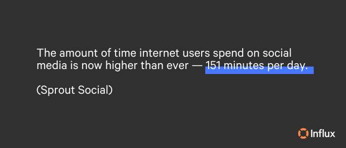
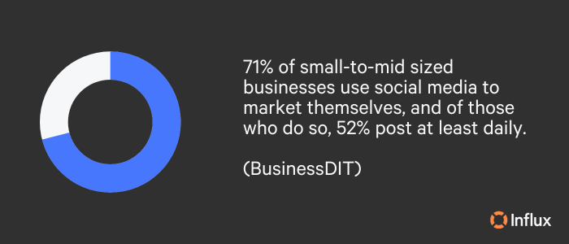
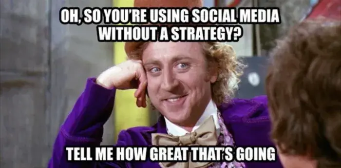
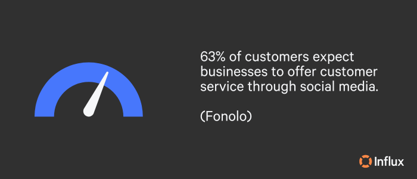

Social media necessitates immediate responses. Access 24/7 social media support that matches your brand voice.Get a quote!
In my four-plus years as a Social Media Specialist creating content and managing platforms for clients in diverse industries, I’ve learned a thing or two about social media marketing and its impact on a business. Content creation is a time-consuming process that requires thought and structure. When employed efficiently, a strong content marketing strategy is one of the best ways a business can shape its brand, engage its audience, and promptly resolve customer questions/concerns. Let’s talk about how to grow your social media presence!

Social presence is essential for your brand
In 1996, Bill Gates wrote an essay that altered the course of digital marketing. Titled “Content is King” (a phrase many are familiar with), he suggested a majority of the money generated online would come from content. Today, not only are brands benefitting from content, but individual creators are making a steady living and rising to fame from their content alone. This is proof of the power content has. According to Statista,
In 2022, global content marketing industry revenue was estimated at roughly 63 billion U.S. dollars. The source projected that it would increase to 72 billion in 2023 and continue to grow in further years to reach 107 billion in 2026.
Ranked by number of monthly active users, the top social media platforms are:
- YouTube
- TikTok
- Douyin
- Snapchat
With over 4.9 billion people accessing social media worldwide as of 2023 and an average social media user hopping between 6-7 social media platforms every month (Demand Sage), it’s easy to see why an online presence is essential for brands. Social media allows a business to showcase its products or services, build relationships with customers, and make it easier for potential customers to connect with a company.
Does your business need to be on all the major platforms? The short answer is no. It’s essential to focus on the platforms that are most relevant to your target audience and the nature of your business. This is especially true for smaller teams that may have limited resources. It’s better to have a strong presence on a few platforms than a weak presence on many.
As a cost-effective marketing strategy, having a solid social presence is a tool for much more than brand awareness. Social media enhances accessibility and enables businesses to reach a wider audience. Strategic content can grow your customer base and boost loyalty. If you’re looking for social media support, Influx can help!
Examples of brands that have successfully found their niche
As someone who understands that content creation can be a painstaking effort, these are the top three social media accounts I respect. Take a look and note how they offer a diverse mix of content that perfectly fits their brand expectations.
1. Chipotle
Chipotle’s social media strategy is a prime example of keeping pace with ‘cultural shifts’ and making the most of trends. Chipotle’s content includes relevant memes, influencer marketing, user-generated content, engaging campaigns, and ‘unhinged’ yet carefully crafted posts. The Chipotle social media support team responds to customer comments with brand-appropriate replies and attaches their name to the end of the comment—a nice touch that conveys personable and genuine approachability.
2. National Park Service
The National Parks Service is truly a wordsmith with captions. Just take its Instagram bio, for example, “Don’t pet the fluffy cows,” with an emoji of a bison. The Parks’ content is funny and informative, and accomplishes its goal of encouraging people to visit the National Parks.
3. Duolingo
Duolingo’s social media strategy is to entertain. Its mascot, a green owl named Duo, is cheeky and oftentimes approaches the line of being inappropriate without crossing it. Racking up over 6.6 million followers on TikTok, Duolingo stays relevant with its use of pop culture references and hilarious responses. Although Duolingo is a well-known business, its content helps keep them visible.

8 proven strategies for boosting your social media presence
There isn’t a specific or ‘correct’ way to make social media content, and what works for one brand may not work for another. I’ve found the following strategies to be consistent all across the board, regardless of industry.
1. Structure your content in an editorial calendar
As previously stated, creating content is time-consuming and necessitates structure. I suggest a monthly editorial calendar to help keep things organized. A social media editorial calendar is a system of planning daily social media posts. This allows you to create a month’s worth of content, review posts for any grammatical errors, and see an overview of what you’re posting for the month to keep things fresh.
2. Use memes sparingly
You may find it hard to believe, but every business and industry can utilize memes. I have chosen a tasty example below as a testament. (Image source: Seoulz) An occasional meme can increase engagement and get people talking. When creating memes, ensure that they are relatable and make sense. Relevant memes have the potential to go viral or at least get a laugh from your audience, which is valuable for reputation.

3. Respond immediately and keep your tone of voice consistent
Keeping your tone of voice consistent on social media is crucial to maintain your brand identity and to create a sense of familiarity with your audience. Consider the personality traits that define your brand and how you want to come across to your audience.
When responding to customer questions, it’s crucial to always maintain that voice. It’s also important to respond as quickly as possible. According to HubSpot, 39% of social media users expect a response within 60 minutes, yet the average response time for businesses is about five hours. Influx offers 24/7 social media support, so your customers don’t have to wait for a response. Increase your social media response time and get a quote now!
4. Create shareable content
Shareable content grows your audience organically. It also means you posted something that other people want their followers to see—well done! To create shareable content, you’ll need to understand the interests and needs of your target audience and speak directly to them. The more relevant and valuable your content is to your audience, the more likely they are to share it.
5. Maintain an understanding of different algorithms
Social media is constantly evolving. Algorithms are fast-moving machines that require social media managers to stay up-to-date with changes and best practices. Social media algorithms determine which content is shown to users in their feeds and take a few things into account, such as the timing of posts and content that receives high engagement. By understanding how these algorithms work, you can create content that is more likely to be shown to your target audience, which increases reach and visibility.
6. Utilize user-generated content
User-generated content (UGC) is a valuable resource for businesses, as it builds customer trust and provides a fresh perspective on products or services. Consider creating a specific hashtag associated with your brand, and encourage followers to tag your account for the chance to be featured. It’s important to remember that you credit the original creator and obtain their permission to use their content.

7. Increase video content
TikTok is the fastest-growing social platform we’ve seen thus far. This resulted in an almost immediate reaction from Facebook and Instagram to introduce reels to keep up and stay relevant. Now, videos are the preferred choice of content consumption. Easier for our brains to process, video presents the perfect opportunity to engage your audience without a block of text to relay the same message.
8. Refer to content buckets
Brands often use six different content buckets—education, personal, entertainment, conversational, promotion, and inspiration. Almost any piece of content falls within these buckets. You lose followers, engagement, and momentum if your content becomes too flat. On the other hand, if your content has a mix of posts that switch up the focus to fit within these buckets, it keeps your audience engaged.
Boost your social media presence with expert support
We hope these tips come in handy to grow your social presence and would love to help you continue making the most of your social marketing efforts. With our round-the-clock support, you can rest assured that your brand’s social media customer service is in good hands. We match your brand voice across all social media platforms to ensure that your customers receive top-tier support right when needed. So why wait? Contact Influx today, and let us help you take your social media presence to the next level!